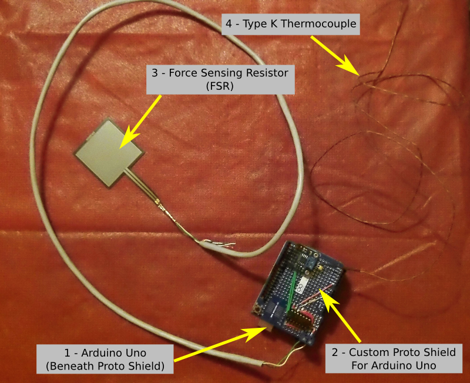

« Previous -
Version 2/4
(diff) -
Next » -
Current version
Jeremy Wright, 01/19/2013 09:20 pm
Shepard Test Stand Detailed Design¶
This is a newer document based on this one , and you should refer to that original version if you want to see the revision history.
Introduction¶
The Shepard Test Stand design is broken down into two main components. The first is the mechanical system, and the second is the Data Acquisition (DAQ) system. The mechanical system consists of the frame of the test stand, as well as the motor mounting mechanism and mounts for the thrust and temperature sensors. The DAQ system handles the task of collecting the data from the sensors and presenting them to the user in a way that facilitates motor testing.
Mechanical System¶
Component Overview¶
The Shepard Test Stand v1.0 mechanical system (pictured above) is made up of six key components. They are:
- Test Stand Base - The Test Stand Base (Base) is constructed from ripped down 2x10 pine stock, and fits over a 4" x 8" x 16" (nominal) solid concrete block which is available at most hardware stores. The outer dimensions of the Base are 10-7/8" x 21-1/2" x 5-3/16", and its inner dimensions are 7-3/4" x 15-5/8" x 3-1/2". The key dimensions of the base are the inner dimensions (to allow the base to fit over the concrete block during operation) and an open platform of 20" in length to accommodate the Test Section Beam.
- Back Plate - The Back Plate is constructed from ripped down 2x10 pine stock. Its function is to provide resistance to the thrust, and a mounting location for the force sensor (on the side facing the motor) and the DAQ electronics (on the side opposite the force sensor). The dimensions of the Back Plate are 7-3/4" x 14" x 1-1/2" (with 8-13/16" sticking up above the base). The key dimensions are the width (to match the top of the Base) and the height (which should be no less than 8" to provide enough space to mount the force sensor and the electronics). Note, there may be one or more holes in the Back Plate to feed wires from the sensors to the DAQ board (or other purposes). In the current version, there is one 3/8" diameter hole drilled through the center of the Back Plate approximately 3-7/8" above the Base to allow a cord from the Motor Mount Bracket to facilitate calibration. After passing through the Back Plate the cord goes over a pulley mounted on the back side of the Back Plate so weights can be hung from the cord to simulate thrust applying force to the force sensor.
- Test Section Beam - The Test Section Beam (Beam) is constructed from a 2x4 pine board, and sits vertically on top of the Base, along the center line. It is 20" long (6" longer than the Rail System) to provide room for the Rail System to retract the Motor Mount and Motor Mount Bracket away from the Back Plate for maintenance. The key dimension is its length.
- Rail System - The Rail System restricts the motor under test to motion along the initial thrust vector. It is made from a Liberty 14 inch Ball Bearing Drawer Slide (PN D80614C-ZP-W, available at Home Depot). Note, this was the shortest ball bearing drawer guide available at the time of testing. If a shorter drawer guide is found, the overall length of the test stand could be reduced. It is installed along the top of the Beam along the Beam's center line.
- Motor Mount - The Motor Mount is based on an Estes D and E Engine Mount Kit (PN 303159). It is assembled according to the instructions for E size motors with four modifications.
- It is assembled without "Centering Rings" (the cardboard rings used to connect the mount to a rocket body)
- 1/4" is removed from the "Engine Block" to leave room for a 3/4" copper plumbing t-connector to be inserted into the aft end of the mount
- A layer of wood glue is spread on the inside of the motor mount at the aft end to seal the surface which will be glued to the t-connector
- A 3/4" copper t-connector is glued into the aft end of the motor mount to redirect the ejection charge
- Motor Mount Bracket - The Motor Mount Bracket provides a connection between the Motor Mount and the Rail System. It is a 1/2" thick plate with a block on the aft end sized to provide the correct contact area with the force sensor. The current version is constructed from 1/2" sheet of pine plywood (to create the plate) and a pine block cut from a 2x4. The plate's dimensions are 6-1/4" x 1-23/32" x 1/2" (the 1-23/32" dimension is set to fit the selected force sensor). The block is 1-1/2" x 1-7/32" x 1-23/32". The critical dimensions are the overall length of the plate (sufficient to accommodate the block and the Motor Mount) and the area presented at the back of the Motor Mount Bracket (sized for the force sensor). The Motor Mount is attached to the Motor Mount Bracket using 2 plastic zip ties (rated at least 50 lbf), one over the t-connector and the other over the "Engine Retainer Ring" at the front of the Motor Mount. The Motor Mount Bracket has a number of holes drilled into it. Two countersunk holes are used to attach the Motor Mount Bracket to the Rail System. Four straight-through holes are used to allow the zip ties to pass through the Motor Mount Bracket. Finally, two grooves are cut in the bottom of the Motor Mount Bracket to give the zip ties room between the Rail System and the Motor Mount Bracket. Many of these details can be seen in the image below.
Note: All of the wooden components are covered in 2 coats of heat resistant spray on primer and 2 coats of heat resistant paint.
CAD Files¶
The CAD files for this version of the test stand are located in the Shepard_v1.0_CAD.zip file here and include the following:- Drafts in PDF and SVG formats in the Drafts directory.
- An exploded view in PNG and SVG formats in the Images directory.
- Files in the Orig_Assemblies directory in the FreeCAD format, including the complete assembly and the exploded assembly.
- Files in the Orig_Parts directory in the FreeCAD format, which are the individual part files for the test stand.
- STEP versions of the part files stored in the STEP_Files directory, which were used to build the assemblies.
- The Templates directory holding two templates that are used with FreeCAD for the drafts/drawings. A4_Landscape_Simple.svg is a blank template that can be used to remove the title block from a drawing. A4_Mach_30_Title_Block.svg is the Mach 30 specific title block used in all the drafts/drawings.
Data Acquisition (DAQ) System¶
Component Overview¶

The Shepard Test Stand v1.0 Data Acquisition (DAQ) system (pictured above) is made up of four key components. They are:
- Arduino Uno - The Arduino Uno is an open hardware electronics prototyping platform that serves as the base for the test stand's DAQ system.
- Arduino Proto Shield - The Arduino Proto Shield is a pre-built shield for the Arduino Uno that allows a developer to easily package their components for the platform. There is a general overview of the components on the test stand's proto shield below.
- Force Sensing Resistor (FSR) - The FSR is a variable resistor who's resistance changes as pressure is applied to its contact area. These resistors are very low cost, but have issues with accuracy and drift, among others. For this prototype which used an FSR with male connectors, a custom cable was made using CAT 5 Ethernet cable and D-SUB pins to connect the FSR to the Arduino Uno. UPDATE: The FSR that was selected had an effective measurement range from 0.1 to 10 Newtons, which was too low for the rocket motors being tested since some could generate a peak thrust of nearly 30 Newtons. This was an oversight that ended up being a moot point because of the FSRs other shortcomings.
- Type K Thermocouple - The thermocouple has a 1-meter long fiberglass braided cable and can read temperatures of up to 500 °C.
- MAX31855 Thermocouple Amplifier Breakout Board - Available from Adafruit Industries, this amplifier is designed to work with any K-type themocouple and gives output from -200 °C to 1350 °C in 0.25 °C increments. It uses a SPI data interface with a built-in 14-bit ADC, and requires 70 to 100 ms to do a conversion. UPDATE: This slow conversion time seems to be the biggest factor limiting our overall data collection sample rate to around 15 samples/sec.
- 0.01uF Capacitor - This capacitor is wired in parallel with the thermocouple and helps smooth out the sampling jitter in noisy environments.
- 560 Ohm Resistor - This resistor is one side of a voltage divider, with the FSR being the other. This allows us to convert the change in resistance of the FSR to a voltage so that it can be measured by the Arduino Uno.
- TLV2374IN Quad 3MHz Op Amp - This TLV2374 is in a DIP package to make it easier to prototype. This IC is used to amplify the voltage from the FSR to a level suitable for the analog inputs of the Arduino Uno.
- 14 Pin IC Socket - Lying beneath the TLV2374, this is used to make it possible to swap out TLV2374 ICs if one is damaged in prototyping, and also prevents heat from the soldering iron from being transferred directly into the IC during assembly.
Electrical Schematics and PCB Files¶
There are no PCB files for this version of the Shepard Test Stand at this time.
You can find the schematic files in the DMSF plugin here
An image of the schematic is shown below.
{kind=link}
{kind=link}
{kind=link}
{kind=link}
{kind=link}